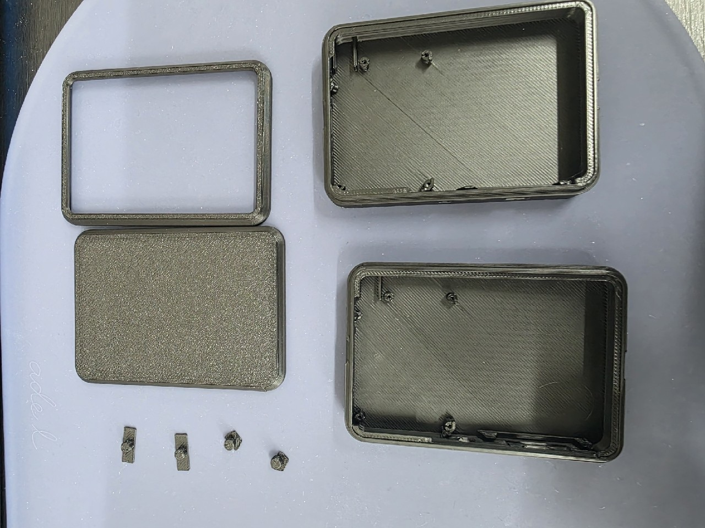

기획·총괄
요구사항 정리, 사양서, 일정과 예산, 파트너 관리, 검수. 프로젝트의 단일 창구입니다.
AI가 들어가는 기기를 만들려면 소프트웨어, 펌웨어, 회로, 기구를 모두 맞춰야 합니다. 해리코드가 전체를 설계하고 책임지며, 전문 분야는 검증된 파트너와 한 팀으로 진행합니다.
직접 하는 일과 파트너가 하는 일을 숨기지 않습니다. 어느 쪽이든 일정과 품질은 해리코드가 관리하고, 고객은 한 곳에만 이야기하면 됩니다.
요구사항 정리, 사양서, 일정과 예산, 파트너 관리, 검수. 프로젝트의 단일 창구입니다.
온디바이스 AI, 기기 통신 펌웨어와 연동, 앱·웹 개발. 제품의 두뇌에 해당하는 부분입니다.
회로·PCB, 기구 설계, 금형과 양산은 실제 계약·검수를 함께 마친 파트너사와 진행합니다.
음성 인식과 경량 언어 모델을 기기 안에서 돌립니다. 인터넷이 없는 곳에서도 동작하고 사용자의 데이터가 외부로 나가지 않아, 의료·복지·가정용 기기에 맞습니다.
제조사마다 다른 통신 규격에 맞춰 기기를 실제로 붙입니다. 문서만 보고 끝내지 않고 실기기에서 프레임 단위로 검증합니다.
기기와 짝이 되는 앱, 공공 데이터를 모아 AI로 설명하는 웹 서비스, 설치 없이 홈 화면에 올리는 웹앱(PWA)까지 만듭니다.

회로·PCB와 케이스 설계, 3D 프린팅 시제품과 소량 제작. 파트너와 함께 만들고 해리코드가 실제 기기에 꽂아 검수합니다.
다음 단계로 넘어가기 전에 결과물을 함께 확인합니다. 진행 상황은 매주 공유합니다.
만들려는 기기와 사용 장면, 이미 가진 것(앱·기기·도면)을 듣고 무엇을 먼저 풀어야 하는지 정리합니다. 첫 상담은 무료입니다.
기능 사양, 직접 할 부분과 파트너가 할 부분, 일정과 비용을 문서로 드립니다. 검수 기준도 이때 함께 정합니다.
AI 모델, 펌웨어, 앱과 회로·기구를 함께 설계합니다. 한쪽이 바뀌면 다른 쪽도 같이 고칩니다. 진행 상황은 매주 공유합니다.
실제 기기에 붙여 시간과 오류를 측정합니다. USBot은 이 단계에서 음성 명령부터 점자 출력까지 6.6초를 확인했습니다.
양산 파트너와 초도 생산을 관리하고, 출시 뒤에도 펌웨어 업데이트와 기술 지원을 이어갑니다.
아이디어만 있어도, 만들다 막힌 시제품이 있어도 괜찮습니다.